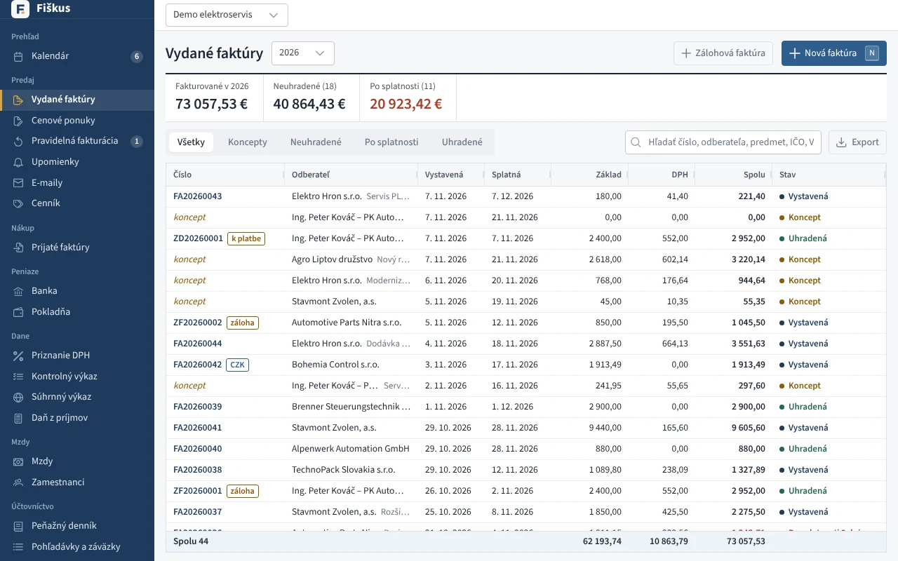

Fiškus¶
Fiškus je slovenský účtovný program, ktorý vznikol na študijné účely a na výučbu účtovníctva. Obsahuje celú cestu dokladu tak, ako ju pozná účtovník: faktúra, úhrada v banke, zápis v peňažnom alebo účtovnom denníku, priznanie k DPH a nakoniec závierka. Všetko je v jednom programe a dá sa vyskúšať na ukážkovej firme bez toho, aby ste niečo pokazili.


Prečo program na výučbu
Účtovníctvo sa učí ťažko z tabuliek v učebnici, lebo v nich chýba to najdôležitejšie — súvislosti. Vo Fiškuse vidí študent, že jedna vystavená faktúra sa objaví v kontrolnom výkaze, v knihe pohľadávok, po úhrade v peňažnom denníku a na konci roka vo výkaze o príjmoch a výdavkoch. Každé číslo sa dá rozkliknúť až po doklad, z ktorého vzniklo.
Na ostré účtovníctvo na vlastnú zodpovednosť
Fiškus počíta podľa slovenských predpisov a jeho výpočty sú pokryté testami, no nie je certifikovaný ani overený audítorom. Ak ho použijete na skutočnú firmu, výstupy (najmä priznania a závierku) si nechajte skontrolovať účtovníkom.
Kde začať¶
-
Windows, macOS, Linux alebo server. Ukážková firma jedným príkazom.
-
Údaje firmy, DPH, jednoduché alebo podvojné účtovníctvo, prechod z iného programu.
-
Ako s programom pracovať na hodine — ukážková firma, úlohy a čo si všímať.
Čo Fiškus vie¶
 Domácnosť: účty, najbližšie platby, rozpočet a príjmy a výdavky za rok
Domácnosť: účty, najbližšie platby, rozpočet a príjmy a výdavky za rok
-
Faktúry, dobropisy, zálohy, cenové ponuky, pravidelná fakturácia, upomienky, e-faktúra.
-
Prijaté faktúry, vyťaženie z PDF, bločky eKasa z mobilu.
-
Karty produktov s obrázkami a parametrami, viac skladov, priemer alebo FIFO.
-
Bankové výpisy s párovaním, platobné príkazy, pokladňa s DPH.
-
Priznanie k DPH, kontrolný a súhrnný výkaz ako XML pre eDane.
-
Peňažný denník, účtovný denník a hlavná kniha, majetok, kniha jázd, závierka.
-
WooCommerce, Shopify, Shoptet, PrestaShop, Magento — objednávky aj riadenie obchodu.
-
Odfotenie bločku, spárovanie telefónu s počítačom v sieti.
-
Používatelia a roly, 2FA, audit, zálohy, legislatíva, AI asistent.
Zásady, na ktorých stojí¶
| Zásada | Čo to znamená pre vás |
|---|---|
| Doklad je zdroj pravdy | Súčty, denníky aj výkazy sa počítajú z dokladov. Nič sa neprepisuje ručne bez stopy. |
| Výpočty robí server | DPH, súčty a ocenenie zásob počíta jedna časť programu, takže desktop, web aj testy dávajú rovnaký výsledok. |
| Peniaze bez zaokrúhľovacích chýb | Sumy sú presné desatinné čísla, nie čísla s plávajúcou čiarkou. |
| Každá zmena je v audite | Kto, kedy, čo a ako to vyzeralo predtým. Aj zmeny cez AI asistenta. |
| Firmy sa nemiešajú | Na serveri s viacerými firmami nevidí jedna firma nič z druhej. |
Plán ďalšieho vývoja je v pláne vývoja, zmeny podľa verzií v prehľade zmien.